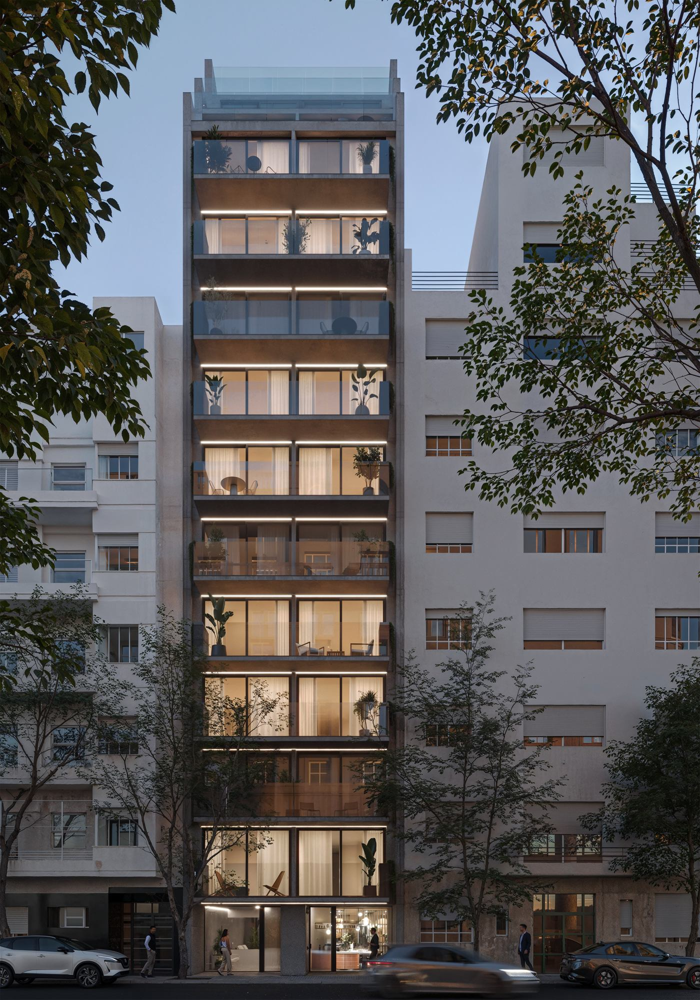
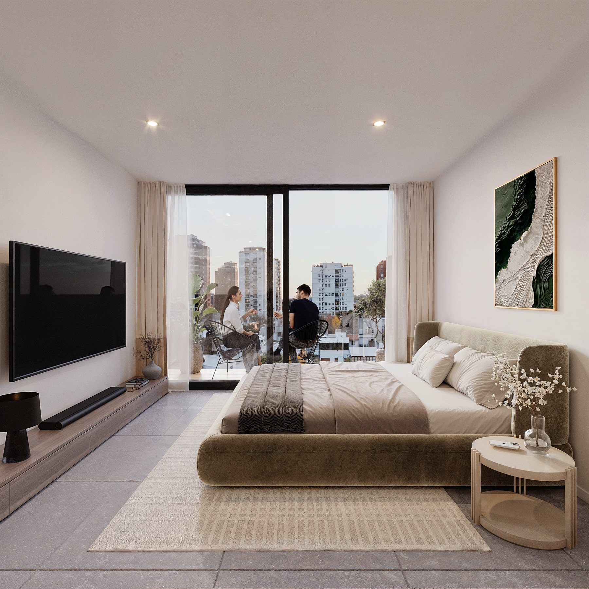
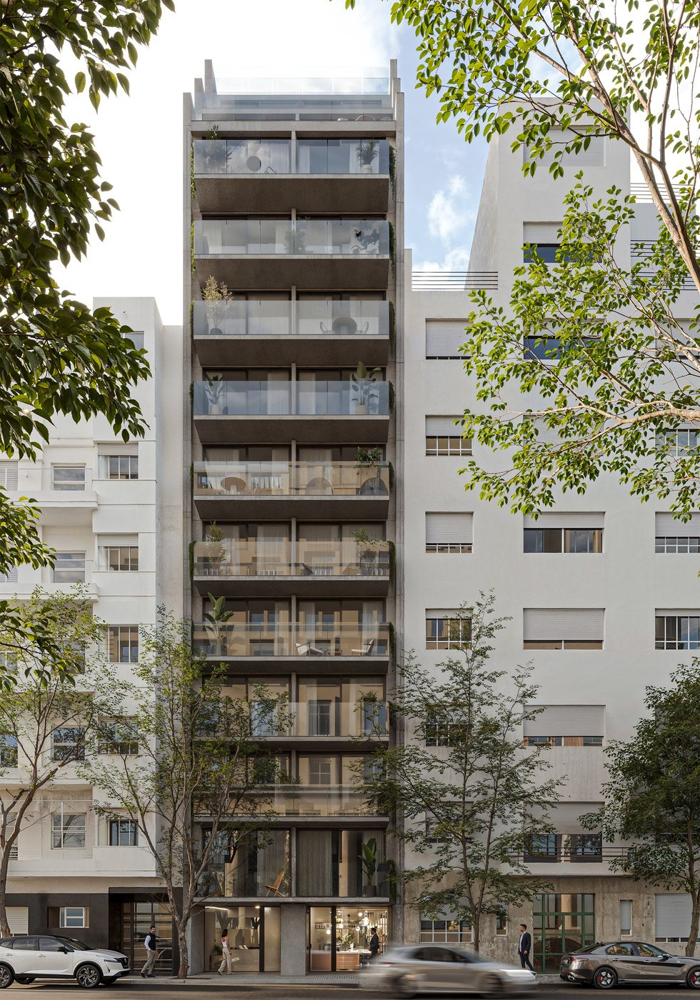
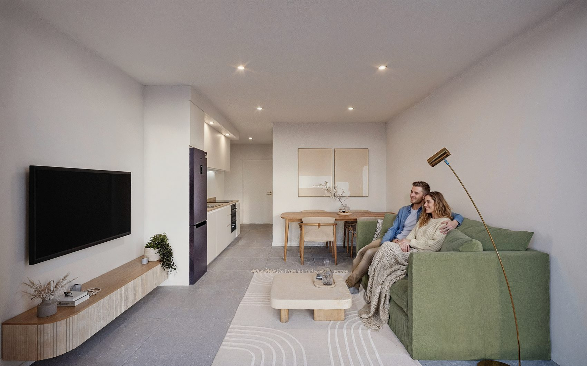
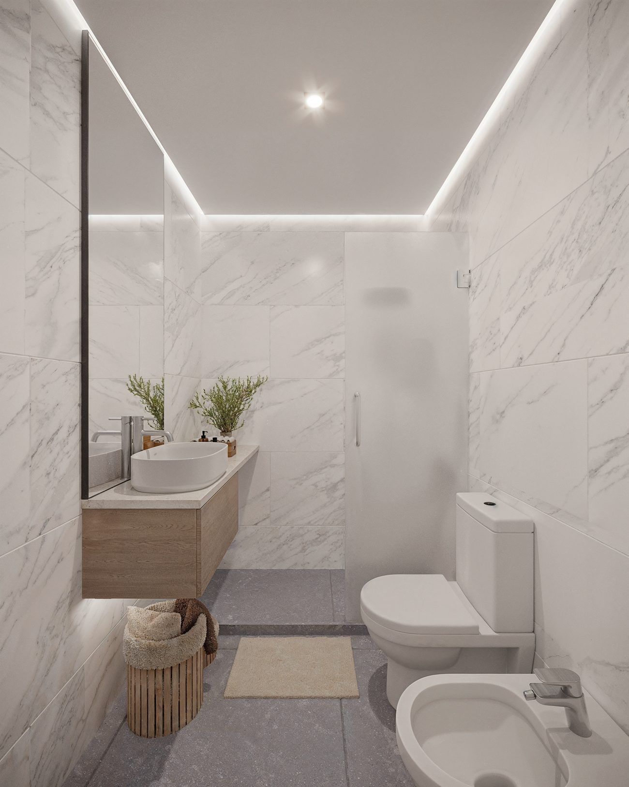
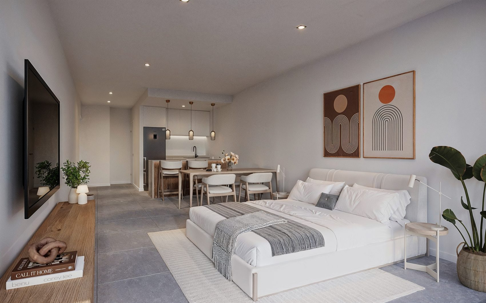
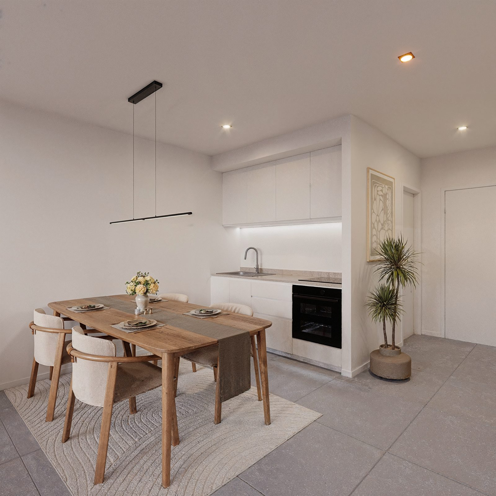
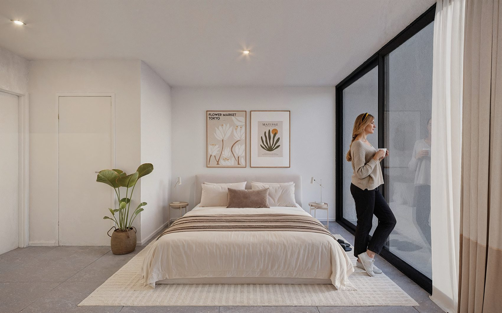
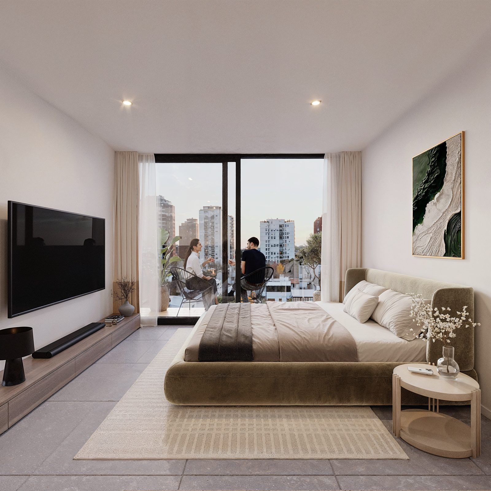
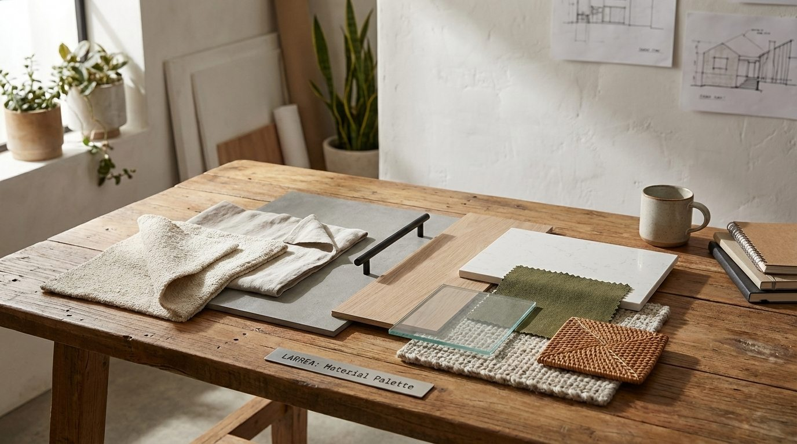

Larrea 1180 · Recoleta — Buenos Aires
Donde el movimiento urbano se transforma en calma, y la arquitectura crea espacios pensados para disfrutar, conectar y sentir que todo está exactamente donde tiene que estar.
En WOOD Recoleta, la arquitectura contemporánea da forma a espacios pensados para ser vividos. Cada detalle combina diseño, funcionalidad y calidad constructiva, creando ambientes que acompañan el ritmo de la ciudad sin perder calidez.
A lo largo de sus 12 pisos, el edificio se integra de manera natural al entorno, mientras el local comercial a la calle suma vida y movimiento al barrio. Vivir WOOD es sentir Recoleta desde adentro, en un lugar donde la ciudad se vuelve hogar.

/ Todo a caminando. Literal.
Recoleta es sinónimo de elegancia, historia y vida urbana. Uno de los barrios más emblemáticos de Buenos Aires, donde la arquitectura clásica convive con propuestas contemporáneas.
A pocos pasos de WOOD: cafés tradicionales, restaurantes de primer nivel, teatros, librerías, universidades, centros de salud y una amplia oferta comercial. Todo conectado por múltiples medios de transporte y con cercanía a líneas de subte.
A pocos pasos · distancias aproximadas a pie
A pocos pasos · distancias aproximadas a pie
A pocos pasos · distancias aproximadas a pie
A pocos pasos · distancias aproximadas a pie
A pocos pasos · distancias aproximadas a pie
A pocos pasos · distancias aproximadas a pie
A pocos pasos · distancias aproximadas a pie
A pocos pasos · distancias aproximadas a pie
/ de 25 a 51 m²
25 a 27 m²
DesdeU$S 74.718
Unidades compactas y eficientes, ideales para invertir, destinadas a renta temporaria o estudios profesionales en el corazón de Recoleta.
Ver unidades disponibles →34 a 41 m²
DesdeU$S 85.650
Monoambientes con balcón, pensados para el ritmo de la ciudad. Ideal para vivienda o renta temporaria. Unidades al frente.
Ver unidades disponibles →51 m²
DesdeU$S 170.281
Las unidades más amplias del edificio, con generosos ambientes y balcón. Unidades ideales para vivienda o consultorios.
Ver unidades disponibles →12 pisos + local comercial a la calle · consultá disponibilidad, plantas y precios actualizados.
/ piso por piso

Paso 1 · Elegí un piso
Paso 2 · Elegí una unidad
/ renders del proyecto






Mesadas en Silestone o similar. Piletas de acero inoxidable Johnson. Muebles y alacenas en melamina. Anafe de 2 hornallas y horno eléctrico Domec. Grifería monocomando FV.
Revestidos en porcelanato, con receptáculo de ducha. Artefactos sanitarios ROCA y griferías FV o similar.
Marcos y hojas en PVC con doble vidriado hermético (DVH). Balcones con barandas de vidrio de seguridad y pisos de porcelanato.
Hall de entrada y palier en porcelanato. Paredes con yeso enlucido. Placares con puertas corredizas de melamina blanca.
Cerraduras biométricas en las unidades. Canalización para TV y teléfono en todos los ambientes.
Sanitarias de agua fría y caliente en termofusión. Agua caliente central con termotanques eléctricos.
Posibilidad de adquirir la unidad con el paquete completo de interiorismo de la firma Wilson Tobal: diseño, funcionalidad y texturas pensadas para que tu hogar esté listo desde el primer día.

Escribinos y te enviamos la lista de precios, las plantas disponibles y el brochure completo del desarrollo.